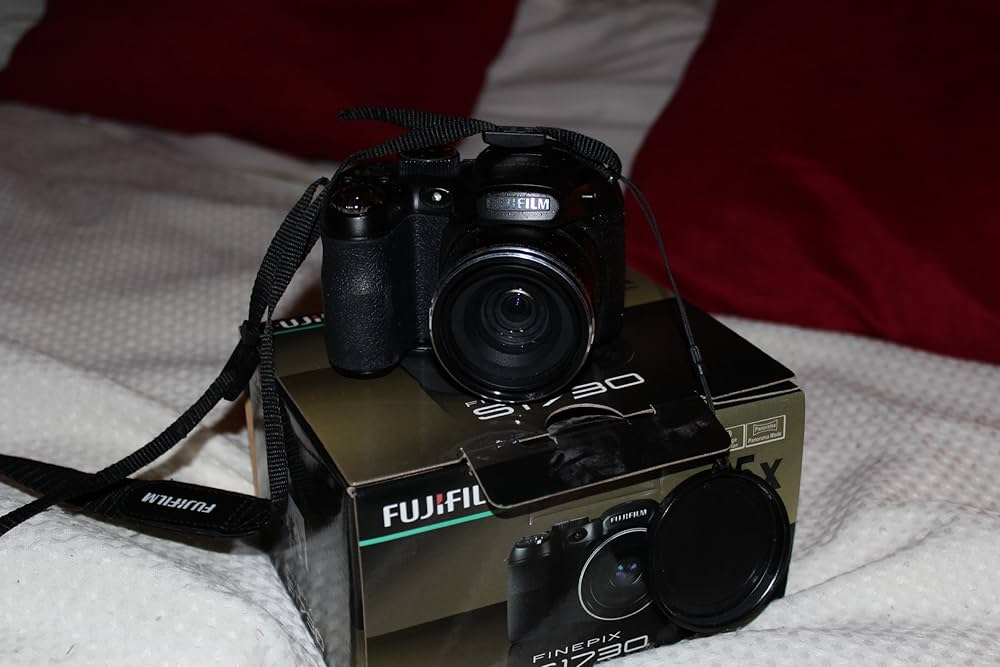
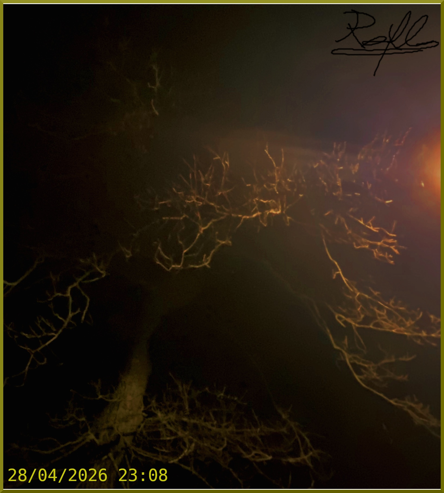
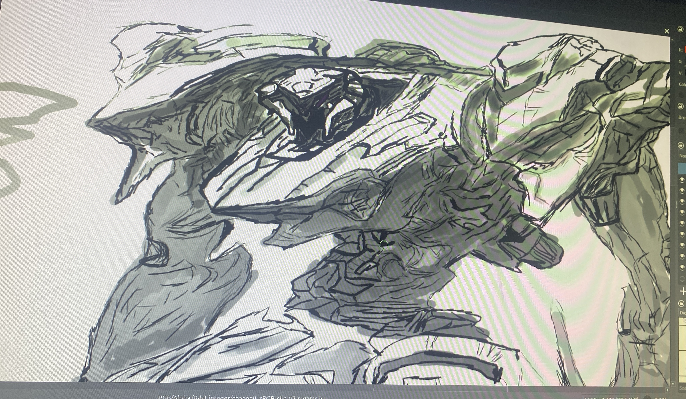

Lobotomy Inc.
Welcome to my corner of the internet.
Now Playing
Resident Evil 2 Save Room Theme
So, it would be stupid to say my name so instead I'll say a nickname, Morsey, as i often use morse code for my online name which itself has a looong story tied to it, but i am 19 at the time of making this, i have been in IT for 4~ years as of 2026, and this is in fact my fist time with html and so far it seems fairly easy but it might just be a matter of experience ? Anyway I'm doing this as therapy, cuz a guy will learn html and get a camera from 2009 before he talks to someone about his issues, ah and the camera I'll cover in the hardware section ,I added it cuz i felt like it, its my website is it not? Well, I hope I'll live long enough to see this grow exponentially and that you get to enjoy your stay here, whoever you may be and however long that stay may last. This is where i cover what hardware i may want to share and any thoughts i have on it The camera i have is a FujiFilm FInePix S1730 from 2010 or so, i dont know its exact manufacturing date. But its a pretty neat bridge camera and being a FujiFilm one ,it comes with a very distinct colour composition, makes everything have the colour that any gen-z kid will remember from when they were, well, kids. Its small but mighty and it obviously captures what others use modern cameras for and spend hours to recreate, one small issue, having paid 20$ ~ ,it cam faulty, original fault was an error that basically took a bit of shaking and hope, now it fails to save after taking one pic, so its a fun thing to hold and mess with buuuut its broken, and i will be buying one of its older sisters, an S2900 series one, practically the same look but eh, what can i do  Any photo i deem fit to be here for one reason or another Basically i was listening to some song, forgot the title tbh, but eh you can choose whatever song you think fits, and i was walkin, as one does, and it was pretty late, really quiet night, like way toooo quiet, shit was scary man and i decided to look up a bit and saw this, there were the branches of a tree after winter, and spring, and both sides showed, you had the death of the leafless branches but also life coming back to them, while encompassing the the street lamp, and it had this odd sort of RE2 save room music vibe, and i decided fug it, lets take a pic and get home to edit this bih, and i did, and it came out pretty well, my second ever edited pic tbh, so im quite proud of it too bad the actual camera is dead, i think it would have made it 20x better, but oh well.  Any art i make, yeah thats it, its pretty self explanatory dude So, i drew this after a solid breakup, 4 whole fucking years of dating and trials and tribulations and all it took was her going to uni getting some fuckass freinds who did nothing but reiterate her hate for men and shit and it made her somehow see me as bad, now, i personally consider myself undeserving of love and a lowkey bitch, hell my very stupidity caused me to loose my dog recently so thats fucked, now im debating wether its work continuing on or calling it whatever and going for the forever sleep, and funny enough the breakup made me not want to die more than anything, but eh c'est la vie as the french say Ignoring all that shit up above, this is based on my AC, of which i forgot the name off and lost the save file long ago, but at the time of april 2025 i loved it, i still do, its a light and nymble AC, with reverse legs and all, i didnt draw its weapons cuz this sort of half body already took me 4 hours on a random summer night and i was fucking tiered dude, i didnt eve colour it and shit. But i do hope you like it.  Since its my corner of the internet I'll drop just about anything that is messing with me to some extent This section will be the most erratic tbh, like no obvious function or like actual titles and shit, maybe ill put this in a hidden tab or some shit so its not as central to the overall website
Anything i decide to hyperfixate on and write about really SO TO PREFACE ALL THIS, this is an informal paper, there are some book names and statistics used, but i didnt faact check them much, and i wont either, but you are not getting a deep and fulfilling and full of data and research sort of article, youre getting someones feelings and educated opinion on this, but mostly feelings, kenopsia is a feeling after all, so its only fitting its explained by someone pouring their own feelings into this
So kenopsia, weird word, its literal meaning, from "The Dictionary of Obscure Sorrows", is in short The Eeriness of Places Left behind and
is described as follows:
"You can sense it when you move out of a house - noticing just how empty a place can feel.Walking through a school hallway in the evening,
an unlit office on a weekend, or playgrounds out of season. They're usually bustling with life, but now, lie abandoned adn quiet."
Now, as i am 19 at the time of writing this, i finished highschool at 16, so 3~ years ago, and i feel like i did not feel this when
i finished because of the speed at which modern life moves at, but in writing this and other late walks i realised that this is just what
I told myself, in reality i felt it, it was the final day, we already were out of school for maybe 3 weeks at this point since all
teaching stopped, and it was just exams now, and we had this big assembly, with gongratulations and final goodbyes and tears, and see
i walked around a bit, then went out the door for one last time, and i think the worst part is that, i only spent 1 year at this school,
i never truky got to have my highschool years in one spot tbh, first year was in london, second, third and fourth were in wellingborough,
1 of which was during covid which gave me an even higher apathetic disconnect from it all, and the last year was in northampton where
i spent about 5 months barely talking to anyone, family included, but by the end i was doing better emotionally and mentally, and yet,
having only spent 1 year, hell even less considering a school year does not go for a full 12 months, i still felt odd, like going back
to my home country, and seeing the places i used to play at as a kid, changed, and with no kids, matter of fact i have a whole trip planned,
where i go to all the places i used to live, and just wander, nothing more, maybe interact with 1-2 people, but just wander, and i
hypothesise that the feeling of kenopsia will be the most prevalent, as i personally see that a part of this feeling isnt just the empty
places, but seeing the fact that they changed in your absence and are just as empty as the time you las set foot out of them.
Another big idea i have is to take advantage of the photography section of ,my website and go to abandoned places, especially malls
since as a 2006 kid malls are a big part of me growing up, and post covid and also moving away from eastern europe to far west past the
long forgotten iron curtain, a lot of these were left behind, my current town has a pretty big mall, and only a single section is still mostly alive,
the rest ? Closed down stores with empty promises and many that dont even hold their original logos and brand banners, just the local council posters and
banners, and see, anyone who might come here now wont ever know of the old section of the mall where the local warhammer shop was, and the first time, my
now best friend, introduced me to warhammer and showed me some of the minifigures.
That was 2~ years ago, the store is long closed and everything to do with it is long long gone, just the room itself basically, and i only just started my first
few warhammer minifigs now, i need to paint 5 more and i have some decent basic units, but i digress, quite heavily so, the point of all that yapping was to
not only better explain the feeling of kenopsia itself to myself and the unfortunate person who stumbeled upon this website and its contents, but also to
possibly jog your memories a bit too, yes you, the reader, a paper like this can surely be kept professional and to the point, but i hold the opinion that
feelings have to be conveyed in a way that actually connects with a reader, moreover there is no corporate board or some fuckass algorithm i need to follow,
so this gives me the power to do as i see fit.
Now, as much as kenopsia, by its meaning as seen in The Dictionary of Obscure Sorrows (hereby referd to as TDOS, i aint writing all that every time my guy), and
my stupid little storytelling, this feeling is mostly used to describe empty places, eg the house right before moving, and the school after hours or on the final day,
but, unless theres another feeling in TDOS that covers this, the ffeeling of kenopsia does not mention the people themselves outside of just a general note, by that
i mean, kenopsia does mention the lack of people yet it does not bring it to a personal feeling, in school you didnt really know or liked everyone did you ?
No shame, me neither twin, but the lack of all the people you personally knew and tied to the place, make their absence, further emphasise the feeling as a whole,
and i believe this could be tied to the feeling of emptiness following the loss of someone.
This is where it gets a bit more serious, since death and other such topics will be discussed, the top was lighthearted for a reason, wether i fully intended it or
not tbh.
But the feeling after a loved one is gone, wether death, and its many causes, or they left your life, broke up, fell out of friendship, divorece, sure there
may be anger, resentment, especially if the person is still alive, but even then there will be a point where our inherent humanity will make us look at those places
and remember the people. If the person is alive you might call them and tell them to "come get their shit", but if they are dead, there wont be a person to answer that call,
the phone may still be available, and charged, on a nightstand with an alarm someone else snoozed because its original target is now gone, but the person ?
No longer there.
So, kenopsia, although a non clinical term and as part of a book not recognised as part of any diagnosing or treatment procedure, i believe that the overall meaning
and its ties to feelings of emptiness or places that are empty without the peopel that made them alive, can be tied to depression, specifically depression post
loss, yes grief falls here too, but grief can and will go away, but unchecked anf poorly managed or understood grief can fall into depression, and i believe
taking this into consideration can help with dealing with grief and depression following grief, now i will say this, although late, i am not a psycologist or a
professional in this field, im just a young adult who is going through some shit, and this helps me and i hope having this here may one day help another person,
hence why i kept it without references, or any heavy clinical terminology.
But now that we got over what kenopsia is and what i believe its ties to grief and depression are, i think its time for liminality, so that deserves its own
extended section.
It originates from the latin word limen, which means threshold, and that is because liminality is meant to signify a point of transition, a point stuck in time,
like the bit of kenopsia that talks about the school (yes if it isnt yet obvious schools are a very big and general way to explain all this i dont have that
many options on hand please) where a BIG chapter in your life ends, and you sort of just walk out like any other last day of school before summer, however, you dont
often go back now do you ? Sure there are some who do, but if we bring statistics into this, (my actual expertiese), there is no high level data, but at the
highschool level and other general education levels the odds of someone becoming a teacher at their own school are of about 2% (i cant be asked to say where
i found it from my guy, like, i already lowkey cried at the death bits, you fact check me if you want), and the amount of students who become teachers is
of about 5%~, althought much info on any of this is genuinely hard to come by, but the odds of going back to that school and staying are low, (holy fucking side
tangent dude, take this guys pen away) so seeing games, or images, or any sort of media of empty clasrooms, even more so if they have similarities to the ones you studied
in, will evoke the feeling of nostalgia, and moreover, kenopsia.
You will reminisce about those days, however distant your age may make them, and yet, if you ever go back, or even seeing the images themselves, makes them
feel..... off. Your friends from the 4th seat in the 3rd column on the right side of the class are most likely no longer in your life, and if they are you reached
the stage of "hows the wife and kids" and not "hey so can you ask your mom if its okay for me to come over", you passed that threshold, yet part of you will
forever remain there, and kenopsia greatly ties to it, as it inherently means the absence of people from places that didnt move on.
Now to bring it all together, kenopsia ties to giref, depression (that has as a root cause grief), and liminality, by its inhernet need of transitional phase
and areas and the loss or lack off people, especially those close to the individual. And liminality heavily relies on a closness to the viewer, and grief and depression
are also extrememly heavily reliant on the individuals experience and overall life, and kenopsia cannot work without any of these.
So this end this yapping seesion, kanopsia heavily ties into liminality as they both rely on the familiarity that humans give to places and the lack of people
in them, and this also heavily ties how people griev when being presented with liminal ideas or space and how depression, and many people diagnosed with depression
will find an eery safety in liminality, and by proxy kenopsia (now i may not have been diagnosed with depression, and im not self diagnosing, but i can ssure
you, when grieving and when genuinely having been put the fuck down by life, i go back to games i finished that are empty, or reminisce over my past, and it helps
but it can make it all worse at times, hell making this website was a way for me to enter some level of liminality within the internet itself, how long has it been
since you heard of or went on a website that was not only made in the past 2-3 years but actually was something hand made, from the heart, just for the sake of
it, no algorithm or clout chasing, just how it used to be, in the 90's, long before me, or the 2000's and 2010's, when i grew up, and the internet was just a
bunch of people with some sort of computer and likely a landline connection rather than proper ethernet, and even then, it was just someone, on the net, and i
want to do that, i did mention this is lowkey therapy, stop beign so judgy gee, im realising all these editors notes may emphasieze my statement of considering
myself a bitch)
About Me
Hardware
Camera
Photography
Random Photo
Art
My magnum opus for now
Thoughts
Research
Kenopsia and its ties to grief, and liminality(WIP)